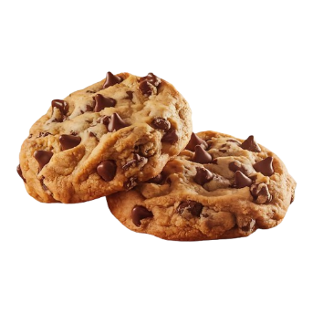

Cookies

Ingredientes
- 200 g de manteiga sem sal
- 200 g de açúcar mascavo
- 100 g de açúcar branco
- 1 ovo
- 1 colher de chá de essência de baunilha
- 450 g de farinha de trigo
- 5 g de bicarbonato de sódio
- 5 g de fermento
- 5 g de sal
- 350 g de gotas de chocolate
Modo de Preparo
- Amoleça a manteiga para ficar em ponto de pomada.
- Misture em um recipiente: farinha, bicarbonato, fermento, sal e reserve.
- Na batedeira, com o batedor plano / raquete, bata a manteiga, o açúcar branco e o mascavo em velocidade média até ficar bem misturado e começar a ficar mais claro.
- Adicione o ovo e a essência de baunilha. Bata em velocidade média até ficar claro e leve.
- Adicione a mistura de farinha em 2 partes, bata devagar entre cada adição.
- Depois de bem incorporado adicione as gotas de chocolate.
- DICA: para deixar os cookies mais gostosos, guarde a massa, depois de pronta, na geladeira por 12h a 24h.
- Depois disso, retire a massa da geladeira, espere ela voltar à temperatura ambiente e faça bolinhas de 60 g cada (se quiser, pode fazer maior ou menor, fica a seu critério).
- Congele as bolinhas ou então asse imediatamente.
- Pré-aqueça o forno a 160º C (se for elétrico) ou 180º C (se for a gás).
- Asse os cookies em assadeira forrada com papel manteiga por 8 a 10 minutos, até que as bordas comecem a ficar douradas e o centro ainda pareça mais claro. Esse é o ponto ideal para ter cookies estilo americano, com a borda mais crocante e o interior super macio e cremoso.